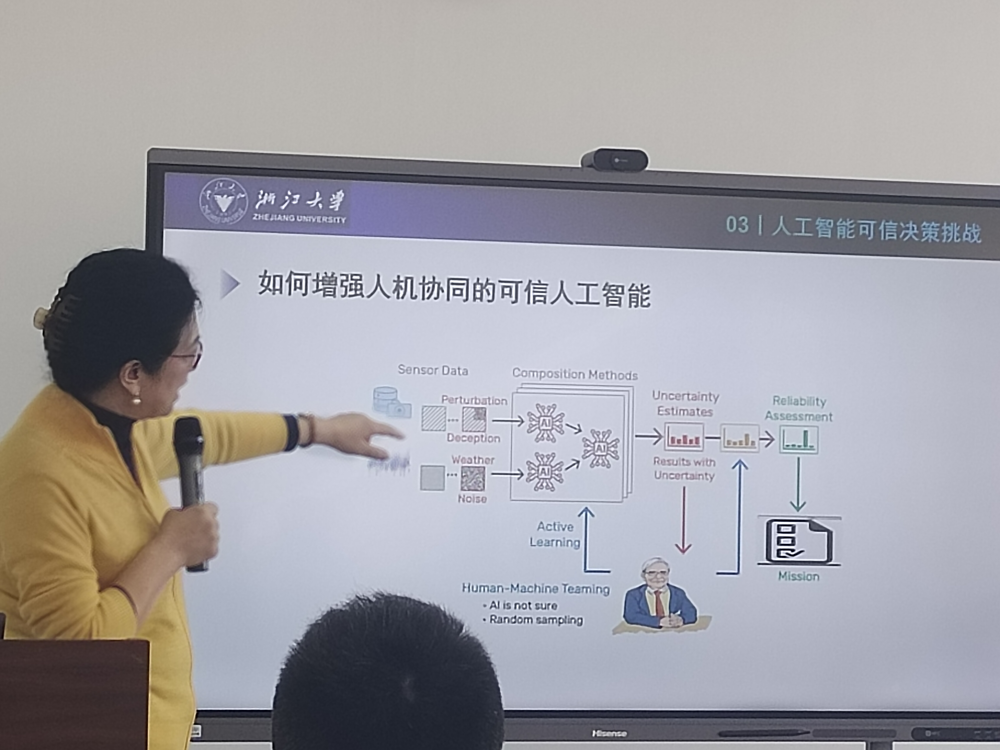
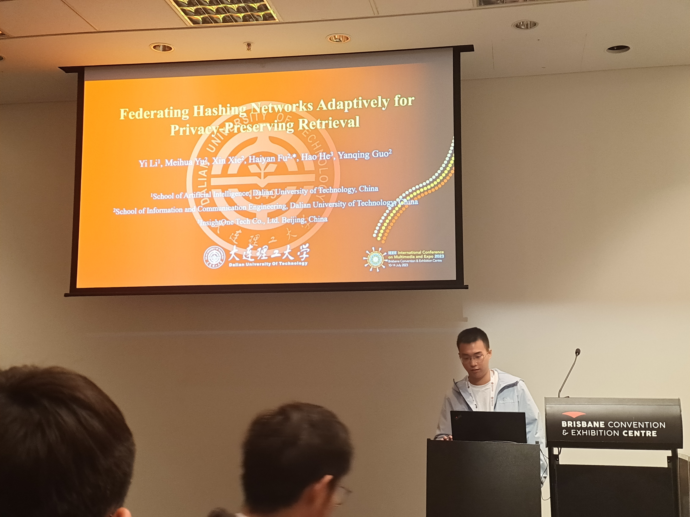
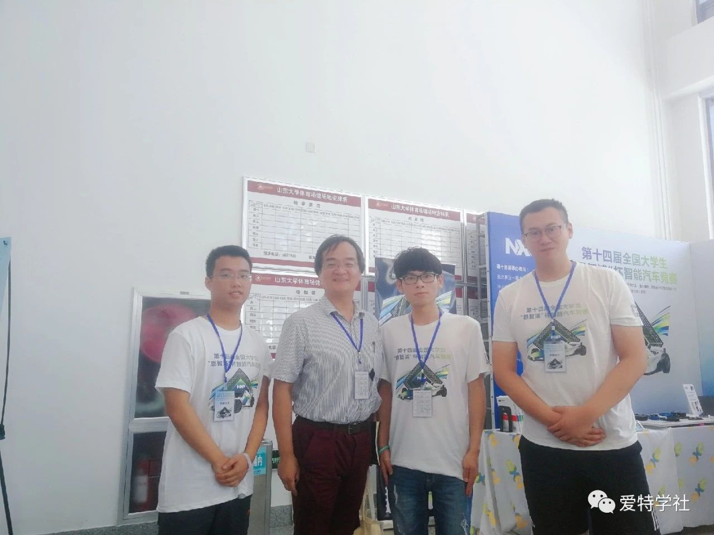

plog

2023-11-11
The report by Prof. Xiangwei Kong from ZJU: Trusty AI.
2023-11-11
Attending the 7th DUT international youth forum.

2023-11-05
The report by Prof. Chengqi Zhang from UTS: ChatGPT's impact on AI research and societal development.

2023-07-12
Making the oral presentation at ICME 2023 in Brisbane, AUS.

2022-08-20
As an intern of computer vision at ByteDance in Beijing.

2019-08-27
Participating in the 14th NXP Cup National University Students Intelligent Car Race and taking the photo with the Prof. Qing Zhuo from THU.